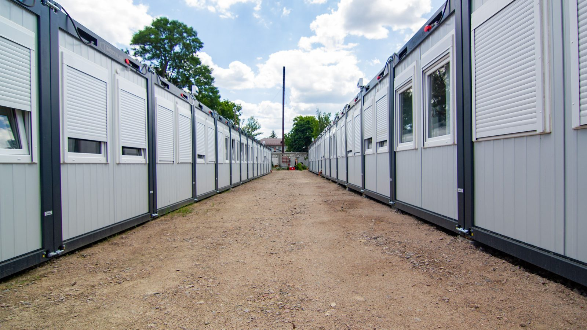

Itapema · Poder Público
Itapema · Poder PúblicoOs banheiros novos da orla de Itapema são alugados, e a ata do pregão soma R$ 2,99 milhões
O outro contrato de módulo da cidade, esse de locação, que não se confunde com a compra dos containers.
A homologação saiu no Diário Oficial dos Municípios nesta sexta-feira, 11 de setembro, e é do dia 3. Venceu a KMA Estruturas de Construção Civil, por R$ 3.270.999,65. O serviço é o que vem antes e depois de o módulo chegar: fundação, terraplanagem, água, esgoto, energia, acabamento e cercamento. É a segunda parte de um projeto que começou em março, quando a Prefeitura registrou preço para 35 containers e duas tendas por R$ 5.065.200,04. Naquele pregão o lote da obra fracassou, porque o único licitante foi inabilitado, e a cidade ficou com os módulos registrados e sem quem os instalasse. Somando os dois certames, são R$ 8.336.199,69 em preço registrado. Registro de preço trava valor e não obriga a gastar. Abrimos os dois processos no PNCP, item por item, e nenhum documento publicado diz em que endereço da cidade os 35 módulos vão parar.
Em 30 segundos · Modo de Leitura, formato original Santa Informa
Itapema homologou R$ 3.270.999,65.
É para instalar containers.
Fundação, água, esgoto, luz e acabamento.
Saiu no Diário Oficial na sexta, dia 11.
A homologação é de 3 de setembro.
Venceu a KMA Estruturas de Construção Civil.
Mas a história começou em março.
Um pregão com 13 lotes.
Os lotes 1 a 12 registraram 35 containers.
E duas tendas. Deu R$ 5.065.200,04.
O lote 13 era a obra de instalação.
Ele fracassou.
Só um licitante apareceu.
E foi inabilitado.
A cidade ficou com módulo e sem obra.
O lote voltou sozinho num pregão novo.
Estimado em R$ 3,96 milhões.
Fechou 17,4% abaixo disso.
Somando tudo: R$ 8,33 milhões.
Do primeiro edital até a ata: 190 dias.
Registro de preço não obriga a gastar.
Os documentos não dizem onde ficam.
Nem quais secretarias recebem.
A Prefeitura não divulgou nota sobre isso.
Poder PúblicoPublicada em Redação Santa Informa

A Prefeitura de Itapema homologou R$ 3.270.999,65 para a obra que faz um módulo em container virar prédio em uso: fundação, terraplanagem, entrada de água, esgoto, energia, acabamento e cercamento. O extrato saiu no Diário Oficial dos Municípios nesta sexta-feira, 11 de setembro, assinado pelo prefeito em exercício, Eurico Marcos Osmari. A data da homologação é 3 de setembro. Venceu a KMA Estruturas de Construção Civil, CNPJ 67.091.419/0001-77.
O extrato não conta a primeira metade. Fomos ao Portal Nacional de Contratações Públicas e abrimos os dois processos. Em 3 de março, Itapema publicou o Pregão Eletrônico 3/2026, com 13 lotes. Os lotes 1 a 12 registraram preço para 35 containers e duas tendas, por R$ 5.065.200,04, contra R$ 5.406.012,18 estimados, ou 6,3% abaixo. Ganharam duas empresas: a Grupo Minimal Box, com 26 módulos e R$ 3.068.600,04, e a Ellus Administração Gerenciamento e Serviços, com 9 módulos, as duas tendas e R$ 1.996.600. As atas foram assinadas em 20 de maio.
O lote 13 era justamente a obra de instalação, com 92 itens, de escavação a extintor. Ele foi declarado fracassado. O estudo técnico preliminar do pregão novo explica o motivo em uma linha: o único licitante que apareceu não atendeu aos requisitos de habilitação. Itapema ficou com 35 módulos registrados e sem ninguém contratado para assentá-los. Em 29 de junho a Prefeitura republicou o lote sozinho, agora estimado em R$ 3.961.921,84, e dessa vez o pregão fechou 17,4% abaixo da estimativa. Do primeiro edital, em março, até a ata que permite instalar, assinada em 9 de setembro, passaram 190 dias.
A justificativa 001/2026/GOV, de fevereiro, diz que os módulos atendem as secretarias e fundações do município e cita unidades administrativas, salas de apoio, áreas de atendimento, almoxarifados e sanitários, em instalação temporária ou permanente. O apêndice do termo de referência lista modelos DRY de 20 e 40 pés e REEFER de 20 e 40 pés. O container mais caro da lista é um só, homologado a R$ 512 mil; o mais barato sai por R$ 48,9 mil a unidade. Container não é novidade na cidade: um contrato de 2024 para fundar e fechar um único container adaptado a vestiário de campo de futebol recebeu sete termos aditivos até maio de 2025.
O resumo de 30 segundos está no topo e a versão completa é o texto acima. Aqui ficam as três leituras da casa sobre o mesmo assunto.
Clara, a otimista
Comprar em bloco é o jeito mais barato de resolver um problema que a Prefeitura tem toda hora: precisa de uma sala de atendimento, de um almoxarifado, de um banheiro, e a obra convencional leva um ano. Com 35 módulos registrados e a instalação contratada, a secretaria que precisar de espaço no mês que vem pede e recebe, sem abrir licitação nova para cada caso. Isso é planejamento, e planejamento é raro.
Tem outra coisa boa aqui: os dois pregões fecharam abaixo do preço estimado. Juntos, mais de R$ 1 milhão abaixo. E cada centavo dessa conta está aberto no PNCP, de graça, item por item, para qualquer morador conferir sem pedir licença a ninguém.
Seu Prudêncio, o criterioso
Merece atenção a ordem das coisas. A cidade registrou os módulos em maio e só agora, em setembro, contratou quem prepara o terreno. Foram quatro meses com container disponível para pedir e obra sem dono. Registro de preço não obriga a comprar, então é bem possível que nenhum módulo tenha sido entregue nesse intervalo, mas vale acompanhar: se algum chegou antes de 9 de setembro, ele esperou.
A segunda coisa é o lote 13. Um único interessado, inabilitado, e o certame parou. Quando um lote grande atrai um licitante só, costuma haver exigência que afasta os outros ou prazo curto demais. Uma sugestão útil é publicar, junto com o resultado, a análise do que travou a disputa, porque a informação serve para o próximo edital.
A terceira é a divergência de número entre a ata 58/2026 do Diário Oficial e a 48/2026 do PNCP. Quem for buscar o documento pelo número errado não acha, e isso é correção de meia hora.
Dito isso, é preciso reconhecer o acerto. A Prefeitura não escondeu o fracasso do lote: escreveu no estudo técnico o que aconteceu, refez a licitação só da parte que faltava em vez de anular tudo, e conseguiu preço melhor na segunda tentativa. Foi justamente por o papel estar todo publicado que deu para reconstruir a história inteira sem telefonar para ninguém.
Caco, o sarcástico
Itapema registrou 35 containers em maio e descobriu em setembro quem ia colocar eles no chão. É o mesmo espírito de quem compra a geladeira antes de medir a porta da cozinha.
O lote da obra teve um concorrente. Um. E esse um foi reprovado. Poucas disputas na história do serviço público brasileiro terminaram com aproveitamento tão redondo de zero por cento.
Mas vou ser honesto. O pregão foi refeito, saiu mais barato, o papel está todo publicado e dá para conferir cada número sem conhecer ninguém na Prefeitura. Demorou 190 dias, tá ruim, mas é progresso.
Fontes: o valor de R$ 3.270.999,65, o nome da KMA Estruturas de Construção Civil, o CNPJ 67.091.419/0001-77, a data de homologação de 3 de setembro e a assinatura do prefeito em exercício estão no Extrato de Homologação do Processo nº 103/2026, Pregão Eletrônico 07.020.2026, publicado no Diário Oficial dos Municípios de Santa Catarina em 11 de setembro de 2026. A estimativa de R$ 3.961.921,84, a data de publicação de 29 de junho, a ata 48/2026 assinada em 9 de setembro e o estudo técnico preliminar que registra o fracasso do lote 13 estão na página do Pregão Eletrônico 20/2026 no PNCP. Os 13 lotes, os 35 containers, as duas tendas, o valor homologado de R$ 5.065.200,04, os itens fracassados e os nomes de Grupo Minimal Box e Ellus Administração Gerenciamento e Serviços estão na página do Pregão Eletrônico 3/2026 no PNCP, junto com a justificativa 001/2026/GOV e o apêndice do termo de referência anexados ao mesmo processo. Os sete termos aditivos do container adaptado a vestiário de campo de futebol estão no extrato do 7º termo aditivo ao contrato nº 040/2024, de 8 de maio de 2025. A soma dos dois pregões, a diferença entre estimado e homologado, a contagem de módulos por empresa e os 190 dias entre o primeiro edital e a ata são contas nossas, feitas sobre esses documentos, abertos e lidos um a um nesta segunda-feira. O outro contrato de módulos da cidade, o dos banheiros da orla, é separado deste e está na nossa matéria Os banheiros novos da orla de Itapema são alugados.
Itapema · Poder PúblicoO outro contrato de módulo da cidade, esse de locação, que não se confunde com a compra dos containers.
 Itapema · Economia
Itapema · EconomiaDe que tamanho é o caixa de onde saem os R$ 8,33 milhões deste texto.
 Itapema · Cidade
Itapema · CidadeO que a cidade projeta arrecadar no ano que vem, e de onde vem o dinheiro novo.